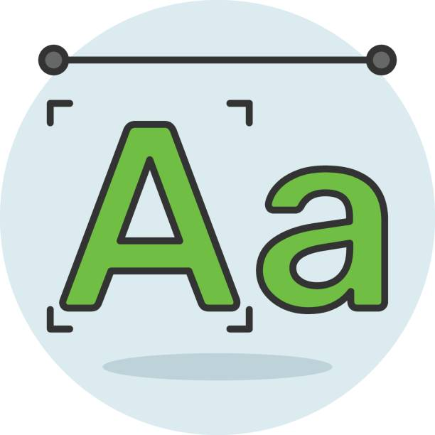

| font-size |
Define el tamaño de la fuente del texto. |
px, em, rem, %, vw |
font-size: 16px; |
 |
MDN |
| border-radius |
Redondea las esquinas de un elemento. |
px, %, em |
border-radius: 10px; |
|
MDN |
| display |
Define el tipo de caja de visualización del elemento. |
block, inline, flex, grid, none |
display: flex; |
 |
MDN |
| flexbox (display: flex;) |
Habilita un contenedor flexible para alinear elementos. |
row, column, wrap, justify-content, align-items |
display: flex; justify-content: center; |
|
MDN |
| position |
Define la forma en que se posiciona un elemento. |
static, relative, absolute, fixed, sticky |
position: absolute; |
|
MDN |
| box-shadow |
Añade sombras a los elementos. |
x-offset, y-offset, blur, spread, color |
box-shadow: 5px 5px 10px rgba(0, 0, 0, 0.5); |
|
MDN |
| overflow |
Controla el desbordamiento del contenido de un elemento. |
visible, hidden, scroll, auto |
overflow: scroll; |
|
MDN |
| z-index |
Define la profundidad de un elemento en la pantalla. |
Número entero (positivos y negativos) |
z-index: 10; |
 |
MDN |
| opacity |
Define la transparencia del elemento. |
Valores entre 0 (transparente) y 1 (opaco) |
opacity: 0.5; |
 |
MDN |
| margin y padding |
Define el espacio exterior (margin) e interior (padding) del elemento. |
px, %, em, auto |
margin: 10px; padding: 5px; |
 |
MDN |
| writing-mode |
Define la dirección del texto en un elemento. |
horizontal-tb, vertical-rl, vertical-lr |
writing-mode: vertical-rl; |
 |
MDN |
| right |
especifica la parte de la posicion de un elemento. |
px, em, rem |
right:auto |
|
MDN |
| float |
ubica un elemento a lado izquierdo o derecho del contenedor |
none(), left(), right(), inline-end() |
float: left; |
 |
MDN |
| left |
especifica parte de la posicion de un elemento. |
left |
left: 10%; |
|
MDN |